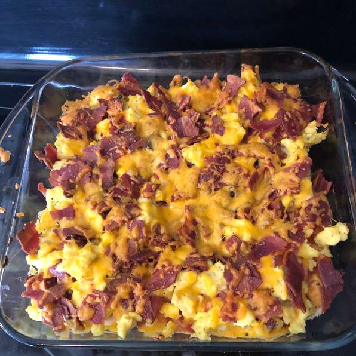

Bacon and sausage Pizza

Description
This is a breakfast Bacon and Sausage pizza Made from Bacon, sausage, chedder cheese, scrambled eggs and a very soft crescent.
Ingredients
- 10 slices bacon
- 10 link pork sausage links
- salt and ground black pepper to taste
- 2 (8 ounces) packages refridgerated crescent roll dough (such as Pillbury)
- 2 cups shredded Cheddar cheese
Steps
- Step 1: Cook bacon in a large skillet over medium-high heat until evenly browned, about 5 minutes per side. Transfer to a plate lined with paper towel to drain and cool.
- Step 2: ook sausage links in the same skillet until no longer pink in the center, 7 to 10 minutes. An instant-read thermometer inserted into the center should read 160 degrees F (70 degrees C). Transfer to plate with the bacon to cool and drain.
- Step 3: Drain most of the grease from the skillet and return to medium heat. Cook and stir eggs until scrambled and no longer wet, about 5 minutes; season with salt and pepper.
- Step 4: Preheat oven to 350 degrees F (175 degrees C).
- Step 5: Roll crescent roll dough out to cover bottom of a 9x13-inch baking dish.
- Step 6: Bake dough until golden brown, about 10 minutes.
- Step 7: Spread salsa (or not) in a layer onto the baked dough; top with the scrambled eggs. Crumble the bacon and sprinkle over the eggs. Slice sausage links and scatter evenly among the bacon crumbles. Top the entire pizza with Cheddar cheese.
- Step 8: Bake in oven until cheese is melted and beginning to brown, about 10 minutes. Allow to cool 10 minutes before cutting to serve.